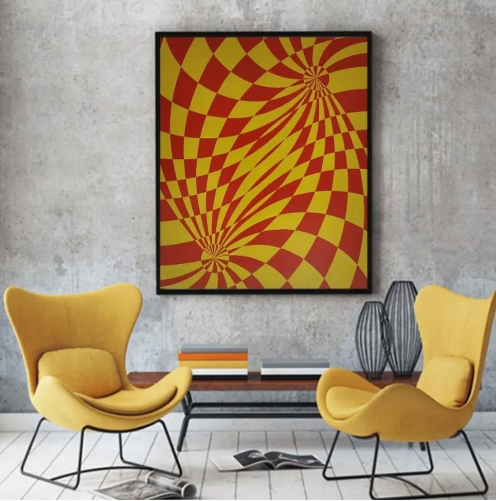

La pintura ha sido mi cable a tierra en los momentos más importantes de mi vida. En ocasiones, cuando las circunstancias se volvían abrumadoras o las emociones parecían incontrolables, encontraba en cada pincelada una forma de liberar mi mente y reconectar conmigo mismo. Cada cuadro ha sido un refugio, una manera de canalizar mis pensamientos y sentimientos cuando las palabras no alcanzaban.
¿QUIEN SOY?
"Soy Juan Martin Sili, Argentino, oriundo de Gualeguay, Entre Ríos."

Mi arte fue cambiando a través del tiempo en colores, texturas, expresiones y sentimientos. Seguro que siempre lo siga haciendo, ya que la búsqueda es enorme y mis ganas por explorar son interminables.

Pinto porque es la forma de encontrarme, y de aceptarme. El resultado de mi obra es el reflejo de mi todo.
Tanto en la vida, como en el lienzo, los accidentes suceden y quedan plasmados allí, para darnos la oportunidad de sentirnos agradecidos de que hayan ocurrido.